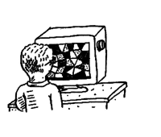
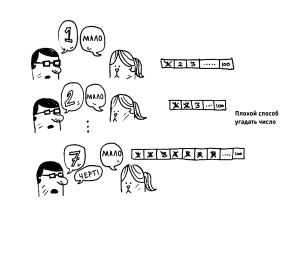

Введение . . . . . . . . . . . . . . . . . . . . . . . . . . . . . . . . . . . . . . . . . . . . . . . . . . . . . . . . . .18
Что вы узнаете об эффективности алгоритмов . . . . . . . . . . . . . . . . . . . . . . . . . . 19
Что вы узнаете о решении задач . . . . . . . . . . . . . . . . . . . . . . . . . . . . . . . . . . . . . . 19
Бинарный поиск . . . . . . . . . . . . . . . . . . . . . . . . . . . . . . . . . . . . . . . . . . . . . . . . . . . .20
Более эффективный поиск . . . . . . . . . . . . . . . . . . . . . . . . . . . . . . . . . . . . . . . . . . . 23
Упражнения . . . . . . . . . . . . . .. . . . . . . . . . . . . . . . . . . . . . . . . . . . . . . . . . . . . . . . . 27
Время выполнения. . . . . . . . . . . . . . . . . . . . . . . . . . . . . . . . . . . . . . . . . . . . . . . . . 28
«О-большое» . . . . . . . . . . . . . . . . . . . . . . . . . . . . . . . . . . . . . . . . . . . . . . . . . . . . . . 29
Время выполнения алгоритмов растет с разной скоростью . . . . . . . . . . . . . . . .29
Алгоритмом называется набор инструкций для выполнения некоторой задачи. В принципе, любой фрагмент программного кода можно назвать алгоритмом, но в этой книге рассматриваются более интересные темы. Ког да я отбирал алгоритмы для этой книги, я следил за тем, чтобы они были быстрыми или решали интересные задачи ... или и то и другое сразу. Вот лишь несколько примеров.В главе 1 речь пойдет о бинарном поиске и о том, как алгоритмы могут ускорить работу кода. В одном примере алгоритм сокращает количество необходимых действий с 4 миллиардов до 32 ! о Устройство GPS использует алгоритмы из теории графов (об этом в гла вах 6, 7 и 8) для вычисления кратчайшего пути к точке назначения. о При помощи методов динамического программирования (см. главу 9) можно создать алгоритм для игры в шашки. В каждом случае я опишу алгоритм и приведу пример. Затем мы обсудим время выполнения алгоритма в понятиях ~о-большое». В завершение будут рассмотрены типы задач, которые могут решаться с применением того же алгоритма.
Вы освоите методы решения задач, которые вам сейчас, возможно, неиз вестны. Примеры: о Если вы любите создавать видеоигры, вы можете написать систему на базе искусственного интеллекта, моделирующую действия пользователя с применением алгоритмов из теории графов идентифицировать такие задачи и построить алгоритм для получения приближенного ответа. А если брать шире, к концу этой книги вы освоите некоторые широко при меняемые алгоритмы. После этого вы сможете воспользоваться новыми знаниями для изучения более специализированных алгоритмов из области искусственного интеллекта, баз данных и т. д. или взяться за решение более сложных задач в практической работе.
Предположим, вы ищете фамилию человека в те лефонной книге (какая древняя технология!). Она начинается с буквы «К». Конечно, можно начать с самого начала и перелистывать страницы, пока вы не доберетесь до буквы «К». Но скорее всего для ускорения поиска лучше раскрыть книгу на середине: ведь буква «К» должна находиться где то ближе к середине телефонной книги.Или предположим, что вы ищете слово в словаре, и оно начинается с буквы «0». И снова лучше на чать с середины.Теперь допустим, что вы вводите свои данные при входе на Facebook. При этом Facebook необходимо проверить, есть ли у вас учетная запись на сайте. Для это го ваше имя пользователя нужно найти в базе данных. Допустим, вы выбрали себе имя пользователя ~karlrnageddon~. Facebook может начать с буквы А и прове рять все подряд, но разумнее будет начать с середины.
 Перед нами типичная задача поиска. И во всех этих случаях для решения задачи можно применить один алгоритм: бинарный поиск. Бинарный поиск - это алгоритм; на входе он получает отсортированный список элементов (позднее я объясню, почему он должен быть отсортиро ван). Если элемент, который вы ищете, присутствует в списке, то бинарный поиск возвращает ту позицию, в которой он был найден. В противном слу чае бинарный поиск возвращает NULL.
 Рассмотрим пример того, как работает бинарный поиск. Сыграем в простую игру: я загадал число от 1до100.Вы должны отгадать мое число, использовав как можно меньше попыток. При каждой попытке я буду давать один из трех ответов: «мало», «много»vили «угадал».Предположим, вы начинаете перебирать все варианты подряд: 1, 2, 3, 4 "" Вот как это будет выглядеть.Это пример простого поиска (возможно, термин «тупой поиск» был бы уместнее). При каждой догадке исключается только одно число. Если я за гадал число 99, то, чтобы добраться до него, потребуется 99 попыток!
_____________________________________________________________________________________________________________________________________________________________________